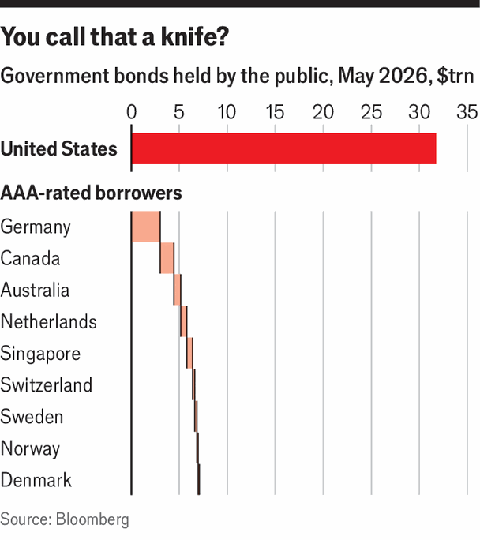

Could something replace the Treasury market?
The alternative assets are too small, fragile or limited in nature to match the usefulness of American debt
June 4th 2026

There is no iron law dictating that the world’s reserve asset be Treasury bonds. For centuries British gilts held that crown, until they were dethroned after the second world war. But there is no successor to Treasuries. The potential heirs lack size and other crucial features.
Since its construction in 1999, the euro zone has always been the most likely contender. But the European sovereign-debt crisis in the early 2010s blew up the long-term bond yields of countries like Greece, Italy and Spain.
More recently, the European Commission has started issuing debt. But these bonds do not yet meet the needs of investors even in Europe, much less globally. For one thing the market is far too small. The commission plans to issue €100bn ($116bn) in long-term debt in the first half of the year, compared with the $2.2trn planned by the Treasury Department.
More importantly, the bonds do not behave like assets backed by the combined heft of a European superpower, but ones issued by a supranational institution without tax-raising powers, supported by a varied group of sovereign creditors. As a result, the ten-year European Commission bond offers a yield of around 3.5%, meaning investors treat it as riskier than the bloc’s most creditworthy governments (the yield on German government debt is 3%). The market is not ready to buy a European story of political unity.

The Treasury market is now concerningly large, but others are too small to compete. There are nine remaining nations with triple-A ratings from each of the three major ratings firms. The list includes Germany and a handful of thrifty northern European members of the euro zone, Australia, Canada, Singapore and Switzerland. Combined, their total government debt runs to around $7trn, less than a quarter the size of the Treasury market (see chart).
Gold, the favoured asset of panicked central banks, has few of the properties that are so valuable in Treasuries. Investors collect no interest income from a bar of gold, which means precious metals cannot play the role of a productive risk-free security. Even in the era of gold-backed currencies, when money could in theory be redeemed for gold, government bonds were still preferred as a safe asset, because they offered investors a yield, not just a parking space for their money.
As China has grown in economic heft, analysts have mused about whether it, too, might pick up the mantle of global financial superpower. But with its capital controls limiting flows of money in and out of the country, it is impossible to imagine China issuing an international safe asset that is genuinely liquid. In a crisis the shutters would come down, and foreign buyers would be unable to repatriate their money.
Some of the very highest-rated corporate bonds, short-term lending arrangements between large financial institutions, and debt secured against seemingly stable assets are often treated as very nearly safe, trading so closely in price to Treasury bonds that much of the time they seem to function in a nearly identical way.
But that is true only until it is not. During the global financial crisis of 2007-09, investors who had depended on near-safe assets like highly rated mortgage bonds to secure enormous leverage discovered that near-safety and safety are altogether different things.
There is nothing to say that the potential successors to Treasuries will not get their acts together, and provide the world with safe and reliable assets one day. But right now, none is up to the challenge.■